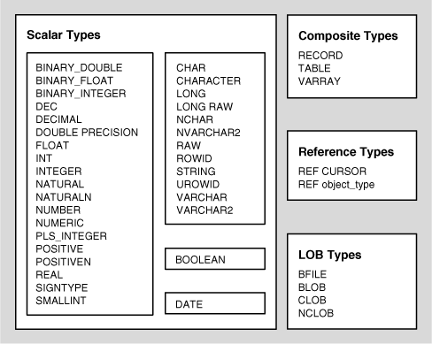
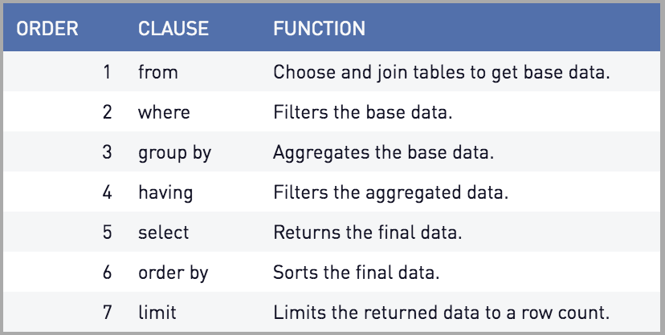
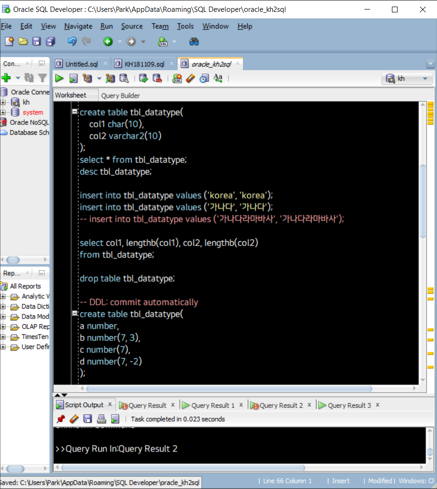
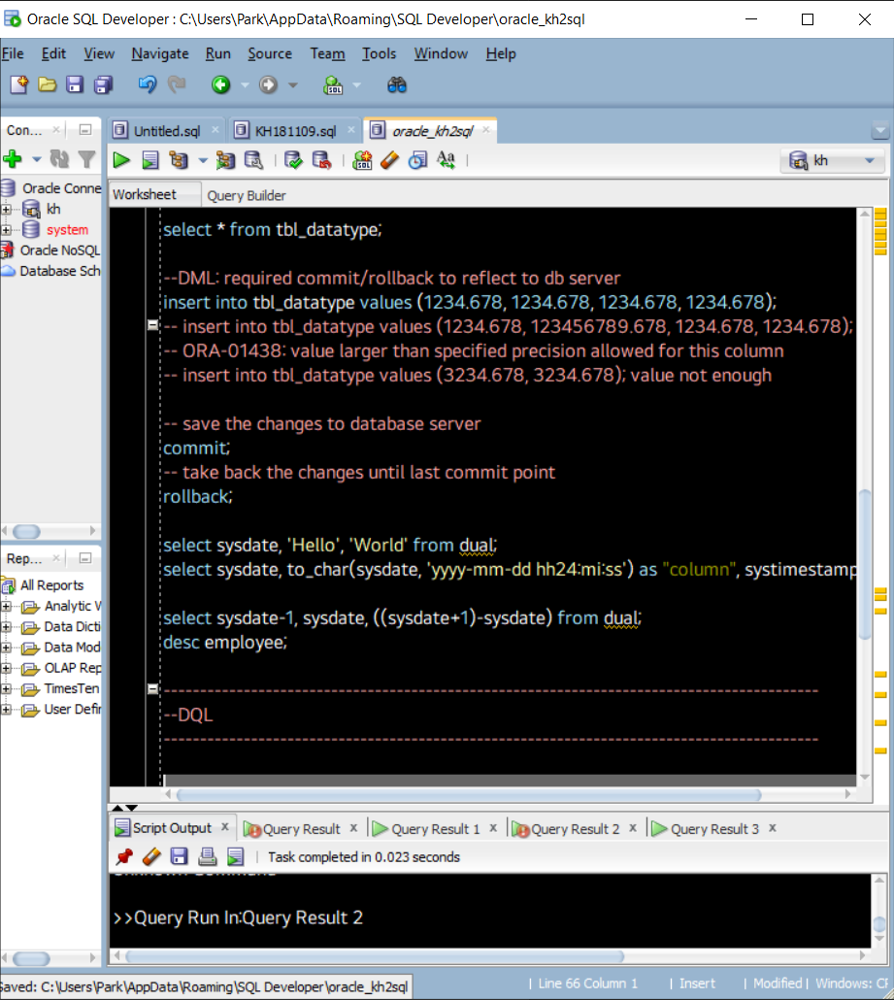
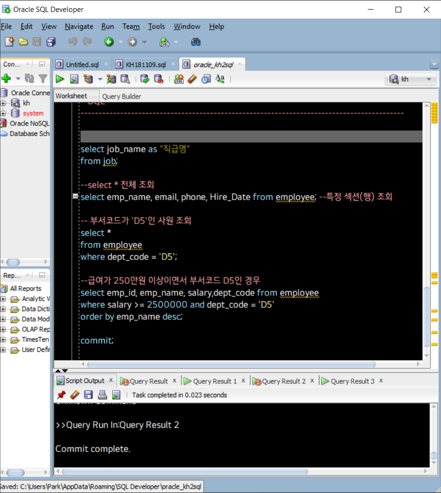

Oracle의 Datatype
문자형:
1-1. 고정형: char(10): 10byte이하의 데이터를 입력하고, 크기는 무조건 10byte 취급. 단!
유일하게 oracle xe버전에서는 한글을 글자당 3byte 취급한다. (본래 2byte)* 최대 2천 byte까지
1-2: 가변형: varchar2(10): 10byte이하, 취급 크기는 실제 입력된 데이터 크기와 동일.
최대 4천 byte까지. long의 경우 최대 2gb, clob의 경우 최대 4gb까지.
숫자형:
number(표현 가능한 전체 자릿수(p), 소숫점 이하 자릿수(s)) p: precision, scale
단, s를 음수로 처리하는 경우 소숫점 n자릿수 이상으로 반올림처리. 즉,
s를 입력하지 않고 number(p)로 선언하는 경우 소숫점을 허용하지 않는다.
날짜형:
년/월/일 시/분/초. 1 단위의 산술 연산이 가능. ex. 날짜 +- 숫자 = 날짜. 날짜 - 날짜 = 숫자.
TimeStamp: 년/월/일/시/분/초/millisecond
sysdate: 현재 시각 정보를 가져오는 키워드

SQL의 처리 순서: FWGHSO
1.from: 대상 테이블. 어디서 부터 조회할 것인지
2.where: 조건절(condition). result set에 포함시킬 row를 필터링
3.group by: groupping rows
4.having: filtering group of rows
5.select: 조회할 컬럼 지정
6.order by: 행 사이의 정렬 지정
기초 코드(1): 데이터 입력/데이터 타입 테스트
create table TableName( --TableName명의 table 생성
(ColumnName1) dataType(byte:size), --열의 이름,데이터 타입(사이즈) 선언
(ColumnName2) dataType(byte:size),
(ColumnName3) dataType(byte:size)
);
select sysdate, 'ColName1', 'ColName2' from dual;
--ColumnName 설정 및 dual(단행-임시테이블)에 선언
select sysdate, tochar(sysdate, 'dateFormat') as "(alias)" from dual;
--as alias로 별칭 설정
insert into TableName values (val1, val2, val3);
--해당 TableName명의 table에 값 대입. 주: 열의 갯수에 맞게 대입해야함
drop table TableName; --TableName명의 table Drop, 즉 삭제
commit; --transaction을 마치고 현재까지의 진행 상황을 저장
rollback; --직전 커밋 시점까지의 transaction을 취소, 즉 날림.


기초 코드(2): 데이터 조회
select * -- = select all, 모든 섹션 조회
select * from (RowName/SectionName); --특정 섹션(행) 조회 설정
where (Condition1) and (Condition2) or (Condition3) --조회 조건문 입력
order by (TargetRowName/SectionName) asc(or desc); --정렬방식 설정

코드 작성시 특이사항
- 오라클을 다운받게 되면 기본적으로 sys, system 이렇게 2개의 계정을 갖게 된다. Oracle Database는 하나의 db 서버에 여러 개의 데이터베이스를 만들 수 있으며 (단, 교육 버전인 xe는 1개의 데이터베이스만 생성 가능), 이 DB 생성 권한은 sys만 가지고 있다.
- sql developer에서 할 수 있는 모든 동작들은 sql plus에서 전부 수행이 가능하며, sql문은 기본적으로 대소문자 구분을 하지 않지만 (때문에 java와 다르게 camelCasing이 아니라 snake_casing을 한다.) identified by, where (조건문)의 경우에는 대소문자 구분을 한다.
- RunScript(F5)는 특별한 경우가 아닌 이상 절대 누르지 않기로 한다. Oracle DB는 java와 달라서 이미 실행된 코드도 재선택하고 실행하면 실행하는 만큼 반복 실행 된다.
- default tablespace의 경우에 system, users 두 개의 구분이 있으며 일반적인 경우에는 users를 권장한다.
- 가변 가능성이 큰 데이터의 경우 가변형 varchar보다 char를 넉넉히 잡아두는 것이 좋다. (용량 효율면에서)